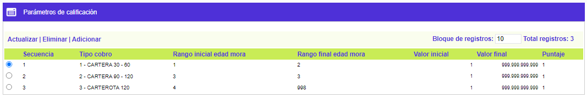
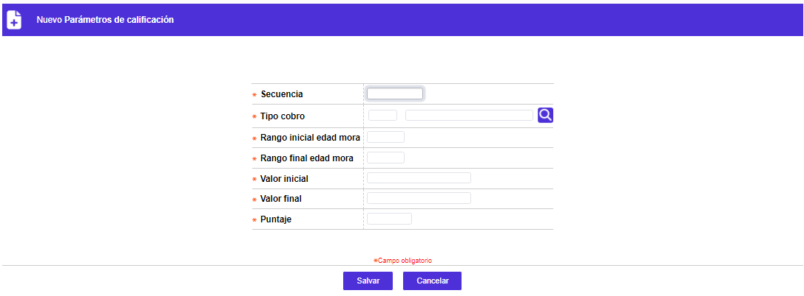
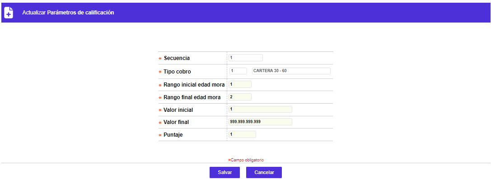

Parámetros de calificación
A través de esta forma o pantalla es posible parametrizar los puntajes asociados a las combinaciones de los rangos tanto de días de mora como del saldo presentado por la obligación, cruzándolos con el tipo de obligación y el tipo de cobro; la finalidad es poder diferenciar o priorizar la atención del cobro de las obligaciones, acorde con las políticas de la entidad o casa de cobranza. Debe observarse especial cuidado al realizar las combinaciones de los valores de los rangos de plazo y monto, puesto que no es lógico asociar el mismo rango de plazo y valor para una clase de obligación en más de un tipo de cobro.
El formulario contiene las opciones Actualizar, Eliminar, y Adicionar.

Adicionar: Si el usuario invoca la opción Adicionar se despliega un formulario con los siguientes campos:

Secuencia |
Campo obligatorio en el cual se debe ingresar las secuencias asignadas a cada uno de los parámetros de calificación. |
Tipo cobro |
Este campo cuenta con lista de valores poblada mediante la opción de Tipos de cobro del grupo de Parámetros de este mismo módulo, de la que debe seleccionarse la clase de cobro a parametrizar. |
Rango inicial edad mora |
Campo numérico de 3 dígitos, obligatorio, en la que se registra el Periodo del rango referido a la altura de mora presentado por las obligaciones que se están parametrizando. |
Rango final edad mora |
En este campo numérico de 3 dígitos, obligatorio, se indica el periodo del rango referido a la altura de mora presentado por las obligaciones que se están parametrizando. |
Valor inicial |
Campo numérico de 14 dígitos incluidos 2 decimales, obligatorio, dentro del que se registra el valor mínimo del rango referido al monto del saldo presentado por las obligaciones que se están parametrizando. |
Valor final |
Este campo numérico de 14 dígitos incluidos 2 decimales, obligatorio, permite registrar el valor máximo del rango referido al monto del saldo presentado por las obligaciones que se están parametrizando. |
Puntaje |
Campo numérico de 3 dígitos con 2 decimales, obligatorio, que permite asignar una calificación o valor porcentual a cada una de las relaciones o combinaciones de tipo obligación, tipo de cobro, rango altura mora y rango de montos, de manera que permita diferenciarlas y facilitar así una priorización para asignar las gestiones de cobro. |
Actualizar: Si el usuario invoca la opción Actualizar se despliega un nuevo formulario en cual los únicos campos modificables son los siguientes:
